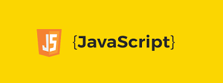

| Lenguaje | Significado | Imagen |
|---|---|---|
| Python | Python es de código abierto, con una sintaxis simple y sencilla de entender, quizá el más fácil de este listado. Es idóneo para iniciarse en el mundo de la programación. Es muy versátil por lo que tiene múltiples áreas de aplicación como: inteligencia artificial, Big Data y desarrollo web. |
 |
| Java | Este lenguaje orientado a objetos funciona independientemente de la plataforma de hardware, entonces, el código escrito en una máquina corre en otra, sin problemas. Incluso, si los sistemas operativos son diferentes, el código Java funciona gracias a la Máquina Virtual Java o JVM, por las siglas en inglés. Su ámbito de aplicación es tan amplio, que existe software desarrollado para puntos de ventas, cajeros automáticos, internet de las cosas, dispositivos móviles, aparte de páginas web con este lenguaje. |
 |
| JavaScript | Otro lenguaje de programación orientado a objetos. Como es interpretado, no necesita compilación, entonces los navegadores leen el código y ejecutan las acciones indicadas. Esta característica, lo hace idóneo para crear páginas o aplicaciones web, con elementos interactivos o más visuales, de allí su relevancia en el desarrollo de videojuegos. La capacidad de ejecutarse desde el navegador, lo hace el lenguaje más usado en el mundo, pues, aunque un sitio web esté hecho en otro lenguaje, puede contener algo desarrollado en JavaScript. |
 |
| C# | C# es un lenguaje de programación muy versátil, creado por Microsoft, con características similares al Lenguaje C, pero orientado a objetos.
Es muy usado en la industria de los juegos, robótica, impresión 3D, internet de las cosas y desarrollo de aplicaciones web y móviles. Así como también, en el desarrollo de aplicaciones nativas para Microsoft, iOS y Android, como controladores y aplicaciones de escritorio. Entonces, si quieres ser parte del mundo de los videojuegos, debes aprender a programar en lenguaje C#. |
|
| PHP | PHP es un lenguaje de programación multipropósito que permite desarrollar aplicaciones del lado del servidor, garantizando una excelente comunicación con la web. Esta capacidad comunicativa entre la web y el servidor, produce el desarrollo de páginas web muy estables y con un excelente rendimiento. A través de PHP, se han creado grandes aplicaciones, herramientas y plataformas, como Facebook, Gmail, Wikipedia y WordPress. |  |